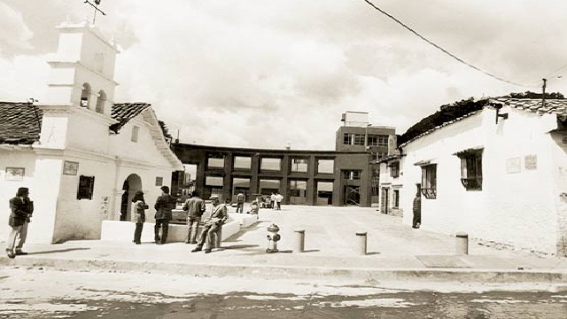

© Fotografía del Instituto Distrital de Patrimonio Cultural
Varias historias se envuelven dentro del Chorro de Quevedo. Aquí hablaré sobre dos de estas:
Esculturas historicas de la gente común: El escultor colombiano Jorge Olave durante los años 90 irrumpió en el barrio La Candelaria con treinta y tres esculturas. Seis de estas fueron instaladas en el Chorro de Quevedo. El propósito de estas esculturas era relatar una parte histórica que suelen perderse sobre grandes hazañas hechas por la humanidad, el individuo.
© Fotografía del Instituto Distrital de Patrimonio Cultural
© Fotografía de Juan Sebastian Barrero
© Fotografía de Archivo Particular
El chorro como frontera de la cultural del nuevo y viejo continente: Esta plazoleta en su pasado también servía como una frontera entre la “ciudad española” y “ciudad indigena”. Esto se puede apreciar en parte de la arquitectura del chorro. Hacia el costado suroccidental. De orden español con vías equidistantes. Y hacia el costado nororiental de la plazoleta, al otro lado de la ahora quebrada de San Bruno, donde la traza urbana española no existe, se pierde y parece desvanecerse en la topografía que dio como resultado calles retorcidas y asimétricas, se encuentra la “ciudad” indígena que nunca referenció un plano antiguo y al que los españoles llamaron “Pueblo Viejo” .
volver al inicio